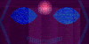
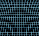
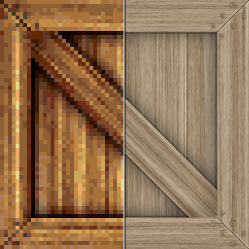
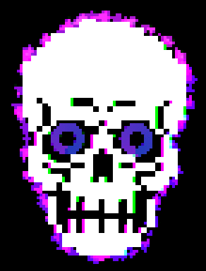
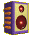

CathodemerIn the creator's on words, Cathodemer is a pixel-based video synthesizer and CRT display simulator software for VJ's, video artists and animators. video production instrument with a CRT display simulator! It features analog-style RGB signal oscillation synthesis, input source mixing and manipulation, recursive color shape synthesis, sprite animation engine and various classic video effects. All parameters can be controlled via MIDI and audio input. Video output can be projected to video projector, rendered to file or routed to other video applications via framesharing. It can be glitchy, and it loves to crash, but the things you can create with it you just cant create with any other piece of software! I can highly reccomend you support the creator and give it a try. You can buy it on steam :3 AsepriteAseprite is an image and animation editor for pixel art! It's layout is thematic to exactly what you're doing in it, and it's the program I've modified and made alot of the assets on this website with! I can't speak on the free version, but the payed for version is defintiely worth it. Snappy UI, and super easy to use PixatoolPixatool is a pixel art converter/pallete swapper! It's what I use to compress and stylize my personal photos when uploading them here to my site! Tons of classic palletes are built in, as well as some special effects such as CRT scanlines and warping. Worth a look if you wanna get that old, digital compressed look, or just wanna convert an image into pixel art! Pixel FX DesignerPixel FX Designer lets you create pixel particle effects!! You can create explosions, lightning...any sort of effect you can think of! Useful for video game or website assets. You can import images and place particle effects around it, and there are other effect, such as chromatic abberation to play with! 1BitDragon1BitDragon is a simple music making program that lets you create tunes without too much effort! There are premade loops melodies and choords to mix, and the tuning makes it hard to sound bad! Fun to play with! |
|
AutoHotkey - Super powerful scripting language that let's you create hotkey/hotstring scripts that can do just about ANYTHING. I've made tons of useful scripts in it, from autoclickers, video game emote shortcuts, and a full on tool I use at my job everyday!
Foobar2000 - The best, most modular music player available on windows. It's awesome and there's plugins available to let you play ANY format you can imagine! I use it to play my .MOD and .XM files (old chiptune files)
WinDirStat - Disk usage viewer that lets you visualize exactly what files are taking up space on your computer. The bigger the square, the bigger the file! super useful for finding bloat on your rig you didnt even think you had
VisiPics - Finds duplicate photographs and lets you delete them based off of image quality and other statistics! You can even adjust how sensetive the algorithm is
Retroarch - Frontend for every emulator you can think of! Have all your games and emulators in one convenient, well designed piece of software
ShareX - Screen sharing tool that does a whole lot more. You can pull text from images with OCR, capture gifs, videos, edit images, and even have it automatically upload to a third party image hosting site
Glasswire - Visual packet capture software and firewall. Not as detailed as something like wireshark, but for a quick glance at your network activity and what programs are using it, this tool is invaluable!
|